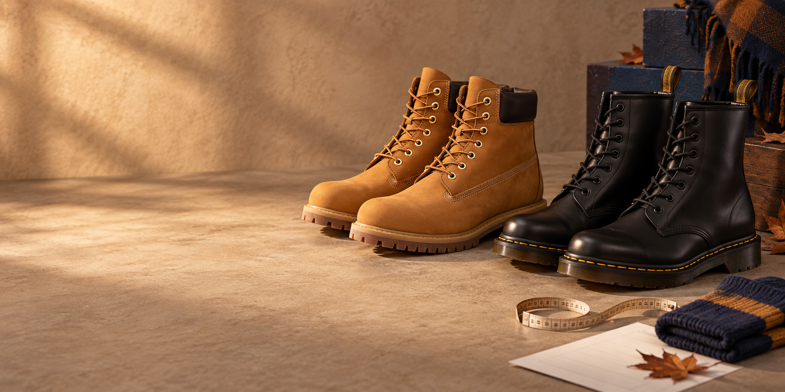

Do not turn a Timberland size into a Dr. Martens size without measuring. Use the longer foot, check the current chart for the exact model, test the real sock and decide which measurement limits the fit: length, width or volume.

| What to check | Timberland | Dr. Martens | SIZES advice |
|---|---|---|---|
| Visual reference | 6-Inch Premium: mid shaft, padded collar and lug sole | 1460: eight eyelets, taller shaft and yellow welt stitching | The silhouette identifies the model; it does not choose the size |
| Length | Compare foot length with the official footwear chart | Check length, size and current product recommendation | Measure in millimetres and use the longer foot |
| Width and instep | Review the toe box, volume and lace closure | Last and construction can change the feeling of volume | A longer size does not always fix a narrow boot |
| Between sizes | Check the model and heel hold before deciding | The official guide allows a slightly larger size with an insole | Consider stability, socks and returns together |
| Test | Walk, flex the ankle and check the toe box | Check heel, instep, shaft and welt area | Test both feet indoors before wearing them outside |
What the official guides say
The official Timberland size guide provides EU, UK, US and centimetre conversions for footwear and explains a method based on placing your foot on paper against a wall. It is a useful starting point, but the product page for the model you want remains the first source to check.
The official Dr. Martens size guide includes foot length and width alongside UK, EU and US equivalents. It also notes that fit can vary by silhouette and style, and that product pages may add model-specific recommendations. That is why this guide does not treat the brands as a fixed conversion table.
The images in this guide show two real, recognisable designs as a visual reference: the Timberland 6-Inch Premium and Dr. Martens 1460. The final size must match the exact product, material, available width and sock you plan to use.
Measure both feet before opening the conversion
Measure at the end of the day, while standing and wearing your autumn sock. Place your heel against a wall, distribute your weight naturally and mark the longest toe on a sheet of paper. Measure from the edge to the mark in millimetres and repeat on the other foot.
Keep both figures and use the larger one. If the difference looks significant, repeat the process to make sure the foot did not move or the paper did not slip. The European or UK number is an output of the chart, not the starting measurement.
Then note width at the broadest point and how much volume your instep needs. You do not need a professional foot cast; you do need to know whether the limit appears at the toe, sides, instep or heel. That observation tells you what to compare when two sizes look close.
The 6-Inch Premium and 1460 are not the same boot
The Timberland 6-Inch Premium is recognisable as a work boot with a padded collar, wheat nubuck and a lug outsole. The Dr. Martens 1460 has a taller shaft, eight eyelets, smooth leather, yellow welt stitching and a lug sole. These details are not only decorative: they change how the foot enters, where the boot flexes and how pressure is distributed.
Using a real model as the visual reference avoids comparing a generic “black boot” photograph with a work boot. Even so, the image cannot replace the chart: a family may include variations in material, lining, width or construction that alter the fit.
Length: the first cross-brand comparison
Start with the longer foot measurement and locate its range in each guide. Do not copy a Timberland number into Dr. Martens or the other way around. If one chart uses centimetres and another uses millimetres, convert the unit, not the size label.
Standing with the boot closed, your toes should be able to extend without hitting the toe box. Walk and step down: if the foot moves forward and the toes strike, there is a holding or length issue. If the heel is already loose, a larger size will probably make the feeling worse.
The toe boxes of a 6-Inch and a 1460 can feel different even when useful length is similar. That is why your test must include movement, not only the amount of space you can feel by touching the toe.
Width, instep and the shape of the last
When the length works but the side presses, identify the location. It may be the toe box, a bunion area, the instep or the opening of the boot. Sizing up adds length and may loosen the heel without addressing the cause.
With laces, adjust from the bottom up and check that the tongue stays centred. If the real sock leaves a mark across the instep or the boot only closes with too much force, look for more volume. Leather or nubuck may adapt slightly across the width, but it is not sensible to buy pain and hope it disappears.
A firmer outsole can also change the feeling of width. Walk long enough to notice whether the foot settles or pressure increases with each step. A pair intended for several hours must work after that time, not only during the first minute.
Socks and insoles are part of the size
Test both boots with the sock you normally wear. A thick sock takes space over the instep, while an insole can lift the foot and change the available volume. If an insole is part of the real use, put it in from the beginning.
Do not use an unusually thin sock to “win” a size during the test. Do not compensate for excess length with several layers either. The combination should match the way you will use the boots through autumn.
What to do when you are between sizes
Break the problem into three questions: do you need more length, more width or more volume over the instep? If you need length and the heel remains secure, try the larger size. If the length is already generous but the width is tight, change the last. If the sock or insole takes too much space, look for a construction that accommodates it.
Dr. Martens says in its guide that a slightly larger size can work with an insole when you are between sizes. First check that the toes do not move forward, the heel does not slip and the insole does not lift the foot into the upper. For Timberland, check the model recommendation and real fit before applying the same decision.
If you are buying online, leave the tags on and test on a clean surface. The return policy is part of the decision: a size that only works after forcing the boot is not a reliable solution.
The movement test that separates “right” from “almost”
Walk indoors, turn, sit, step up and flex your ankle. Check that the toe box does not hit, the heel does not lift excessively and the shaft does not rub. Repeat with the longer foot and the real sock.
When you take the boots off, inspect the socks. A deep mark in the same place, tingling or a need to curl your toes are signs that the fit is unresolved. The answer may be another size, but it may also be another width, closure or model.
Save a reference you can reuse
With SIZES you can save both foot measurements, the longer foot, the model, the size, the sock and a fit note. “Timberland 6-Inch Premium, longer foot 267 mm, medium sock, secure heel and instep pressure” will help with the next purchase far more than remembering a number alone.
For more context, read how to choose an autumn boot size online, what to do when you are between sizes and how to read an EU, UK and US size guide. You can also return to the size guides index.
Final recommendation
Timberland and Dr. Martens can live in the same wardrobe, but they should not share an automatic size equivalence. Measure both feet, use the longer one, check the official chart for the exact model and test the pair with the real sock and real movement.
The best size is the one that lets your foot walk with stability and without unnecessary pressure. When a number does not work, change the hypothesis — last, width, volume or model — before adding length without a clear reason.
Frequently asked questions
Do Timberland and Dr. Martens fit the same?
Do not assume an automatic match. Measure your foot, check the current chart for each model and assess length, width, instep and hold.
Which models are compared in this guide?
The visual reference is the Timberland 6-Inch Premium and Dr. Martens 1460, but the final choice should follow the product page and size chart for the exact model you want.
What should I do if I am between Dr. Martens sizes?
The official guide says a slightly larger size can work with an insole when you are between sizes. First check that the heel stays secure and the length is not excessive.
Will sizing up fix a narrow Timberland boot?
Not necessarily. If the length is already enough and the problem is width or instep, look for a different last or construction before adding length.